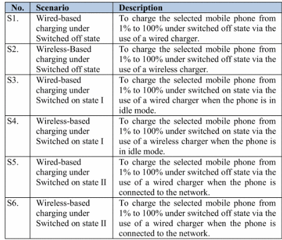
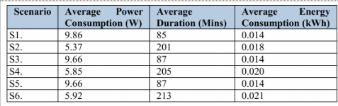

We have become very dependent on mobile devices, with their ability to aid us in education, communication, and entertainment.
As we rely more on these devices, we desire faster and more efficient charging options. On this article we will be talking about
the current state of charging technology, challenges faced by engineers when pushing charging speed and efficiency, safety concerns
in fast charging, and the future of charging technology.
A few years ago, charging a smartphone could take hours, but today, with our advancements in technology we have reduced that time drastically.
An example in how charging technology has evolved can be see in the comparison between the two different mobile device models of the OnePlus
smartphones. The OnePlus 6 (released in 2018), the OnePlus’s first release including fast charging technology, could deliver up to 20W of power
to the device using the Fast-Charging feature, allowing a full charge from 0% to 100% to be over an hour (OnePlus, 2018). In 2021, the OnePlus
9 Pro introduced a new and improved charging technology (Warp Charge 65), which could deliver up to 65W of power to the device, allowing the device
to be charged from 0% to 100% in just 30 minutes (OnePlus, 2021). This significant increase in power in just a span of 3 years shows the amazing potential
of future charging technology.
Another major trend in mobile charging technology is wireless charging. Wireless charging, made popular by brands like Samsung and Apple, has made charging more
convenient. However, this convenience comes with some downsides, particularly in speed and efficiency. Wired charging is typically more efficient, and tests have
shown that wireless charging can take significantly longer. For instance, it took approximately 206 minutes to charge a phone wirelessly, compared to just 86 minutes
with a wired charger. This demonstrates that wireless charging can take more than twice as long as wired charging. highlighting the current limitations in charging speed
in wireless technology (G. Bekaroo and A. Seeam, 2016).


One of the most significant challenges engineers face when attempting to increase charging speeds is managing the heat generated during the process. Faster charging
naturally leads to higher energy output, which in turn generates more heat. This is particularly problematic for lithium-ion batteries, which are widely used in mobile
devices. Escalating the charging current speeds up the process of charging, but it also has the unintended side effect of hastening the battery's deterioration (Kumar
Thakur et al., 2023). High temperatures have several bad effects on the lithium-ion batteries, leading to reduced performance, shortened lifespan, and even safety hazards
(Chavan, S., 2024).
Reference 1
Chavan, S., Bhumarapu Venkateswarlu, Salman, M., Liu, J., Pawar, P., Joo, S.W., Choi, G.S. and Kim, S.C. (2024). Thermal management strategies for lithium-ion batteries
in electric vehicles: Fundamentals, recent advances, thermal models, and cooling techniques. International Journal of Heat and Mass Transfer, [online] 232, pp.125918–125918.
Available at: "Thermal management strategies for lithium-ion batteries in electric vehicles: Fundamentals, recent advances, thermal models, and cooling techniques - ScienceDirect.">Thermal management strategies for lithium-ion batteries in electric vehicles: Fundamentals, recent advances, thermal models, and cooling techniques - ScienceDirect.
[Accessed 2 December 2024].
Kumar Thakur, A., Sathyamurthy, R., Velraj, R., Saidur, R., Pandey, A.K., Ma, Z., Singh, P., Hazra, S.K., Wafa Sharshir, S., Prabakaran, R., Kim, S.C., Panchal, S. and Ali, H.M. (2023).
A state-of-the art review on advancing battery thermal management systems for fast-charging. Applied Thermal Engineering, 226, p.120303. [online] Available at: A state-of-the art
review on advancing battery thermal management systems for fast-charging - ScienceDirect [Accessed 2 December 2024].
Bekaroo, G. and Seeam, A., 2016. Comparison of wireless and wired charging systems for mobile devices. IEEE Transactions on Industrial Electronics, 63(6), pp. 3821-3829. [online] Available at: Improving wireless charging energy efficiency of mobile phones: Analysis of key practices | IEEE Conference Publication | IEEE Xplore [Accessed 2 December 2024].
OnePlus, 2018. OnePlus 6: Dash Charge Technology. [online] Available at: OnePlus 6 specs - OnePlus (Global) [Accessed 2 December 2024].
OnePlus, 2021. OnePlus 9 Pro: Warp Charge 65. [online] Available at: OnePlus 9 Pro Specs - OnePlus (United Kingdom) [Accessed 2 December 2024].